MIxS-UX Survey on experiences on the use and development of MIxS metadata standards
Introduction
This anonymous survey has been designed to get an overview of current awareness and experiences in using the ‘Minimal Information About (X) Any Sequence’ or ‘MIxS’ suite of metadata checklists designed by the Genomic Standards Consortium (GSC) for the reporting of nucleic acid sequencing data.
The MIxS checklists aim to greatly enrich the contextual annotation around DNA and RNA data to improve accessibility, promote effective re-use, and maximise scientific (re-)discovery from the vast amount of genomic data being produced by scientists today.
The results from this survey will be used to help guide the NFDI4Microbiota ‘MIxS-UX’ FlexFund project improve the documentation around MIxS.
Key Takeaways
- Most responders are interested in both using and contributing to MIxS.
- Most responders were working at a post-doctoral level or higher.
- The MIxS GitHub repository and/or the associated website is the primary source of information on MIxS.
- Familiarity with core MIxS concepts by responders is mixed.
- Primary blockers to new contributors are lack of time or not knowing how to contribute.
- MIMS, MIMAG, and MIMARK checklists were most popular, and good targets for documentation examples and training material.
Survey Structure
The survey ran from 2026-02-18 to 2026-03-24. An optional raffle was offered, with 3 small prizes (stickers, and other GSC merchandise) allocated. The survey was hosted on https://tally.so, and directly advertised on:
- NFDI4Microbiota mailing list
- Genomic Standard Consortium Slack
- GSC mailing list
- Mastodon
- ISBA Slack
- Bluesky
Questions were grouped into the following sections:
- Demographic questions
- Basic questions
- Usage of MIxS
- Knowledge of MIxS
- Contributing to MixS
- Technical Questions
- Wider context
There were 56 responses in total.
Survey Responses
Demographics
To get a better idea of who the responders were, we can look at the geographic distribution of responders.
The vast majority of responders come out of European countries, and other similar richer countries (USA, Australia, Israel). Again the largest portion of responders come out of Germany, reflecting the visibility of the survey to NFDI4Microbiota-associated researchers.
We asked what career state the responder was in, and if they were associated with any relevant MIxS consortia.

Most responders were later in academic career stage, either as Post Docs or assistant professor stages. Most responders were not associated with a particular consortia, but NFDI4Microbiota and the National Microbiome Data Collaborative (NMDC), who are both heavy users/investors in the MIxS project were at the highest level.
The fields that the responders worked in were:

Most responders work in some form of (meta)genomics or handling sequencing data, reflecting the primary advertising locations (NFDI4Microbiota, Genomic Standards Consortium) - both of which have a heavy focus on microbial genomics.
Basic Questions
To get a better idea in which context the responders were providing feedback from, we first asked whether the responders have in the past, or were currently, handling forms of nucleic acid sequencing data.

The 98.2% of 56 responders were/are handling sequencing data now or in the past, as expected in terms of people who would be interested in working on or contributing to improving metadata annotation quality of sequencing data.
Of those who were handling data, we then asked if within the context of their work, they had heard of the MIxS project and where they had heard of it initially.

Only 47.3% of 55 had heard of the MIxS project.
This is a useful metric, as we can therefore see that despite many researchers are handling sequencing data, less than half have heard of a metadata standards project that has been around since 2008 (MIGS) or 2011 (MIxS), despite adoption by major sequencing data repositories such as NCBI’s SRA and EBI’s ENA. An awareness campaign could be useful in this regard, also to attract in new contributors and refresh the project’s working groups.
This is particularly as the project is mostly known via word of mouth or through exposure during data upload.
More specifically, if discovered via a publication, event, or social media, these venues were:
| Source of discovery |
|---|
| An online presentation by James Fellows Yates in 2023, I think. |
| ENA and SRA |
| it was so long ago I dont recall! |
| https://doi.org/10.1038/nbt.1823 |
| AEGIS meeting Helsinborg |
| I think it was from the first publication, of Yilmaz et al. At the time, I had generated sequencing data (FLX) and I was about to submit them to ENA. |
With the DOI being the original Yilmaz et al. (2011) paper in the journal Nature Biotechnology.
Only two of the people who remembered how they found MIxS were from events. However we asked responders if they had attended any GSC conference or event at all.

Of 26 responders 19.2% have attended a GSC conference or event. This is not to be unexpected as likely GSC conferences or events are more likely to be heavier users or developers, as the events have been generally aimed at researchers with a strong interest in metadata standards.
Usage of MIxS
We next asked whether the responders who handled nucleic acid sequencing data and had heard of MIxS about their usage of MIxS itself (not just awareness of the project), whether using a checklist or developing one.
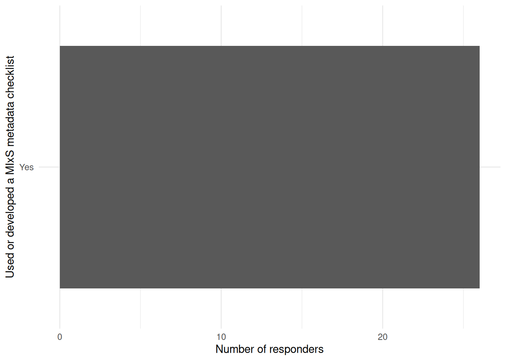
Of the remaining responders (26), 100% had interacted with MIxS in some form.
The breakdown of the interactions are as follows:

Most responders have been submitting or processing existing metadata, with only a smaller fraction actually developing or implementing the standard’s schemas themselves.
We asked those who had been submitting or processing the metadata, where the primary location of such interactions were.

As expected, the vast bulk of the responders were interacting with databases associated with the INSDC consortium of sequencing data repositories (ENA, and NCBI).
To get an idea in which ways metadata submitters/processing are actually handling the metadata themselves (filling in, validation, etc.), we asked if they have used a validation tool, and if so which methods and tools they are using.

Very few of the responders (7) have actively have tried to validate metadata, and of those most of these were using the ENA submission form (reflecting the European centric make up of responders) or manually (e.g. using custom scripts).
The MIxS developers were also interested to know whether researchers using the validation tools felt they were validating correctly - i.e., the validators checked the submitted metadata in the way they understood MIxS defined each term.
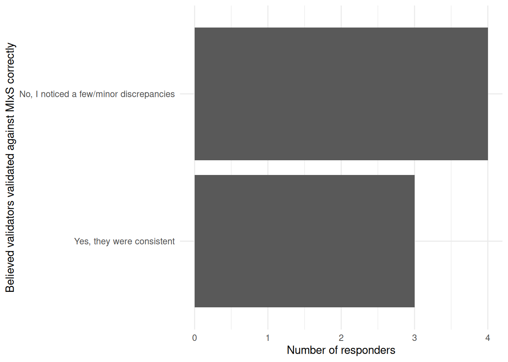
Even though there were few responders, approximately half felt the tools were not always validating correctly.
| fields | count |
|---|---|
| Custom scripts | 1 |
| FAIR Data Station | 1 |
| NCBI BioSample submission validation | 1 |
| ENA submission validation | 2 |
| Manually (by hand) | 2 |
Despite the small sample-size, the perceived discrepancies between the the validation tools output and the MIxS schema itself, it appears these occur across all validation tools.
Knowledge of MIxS
We next wanted to understand how much the responders knew of the MIxS standard, including core concepts and about the main checklists themselves.
We first wanted to know the locations, if any, that the responders would read to get more information about MIxS.
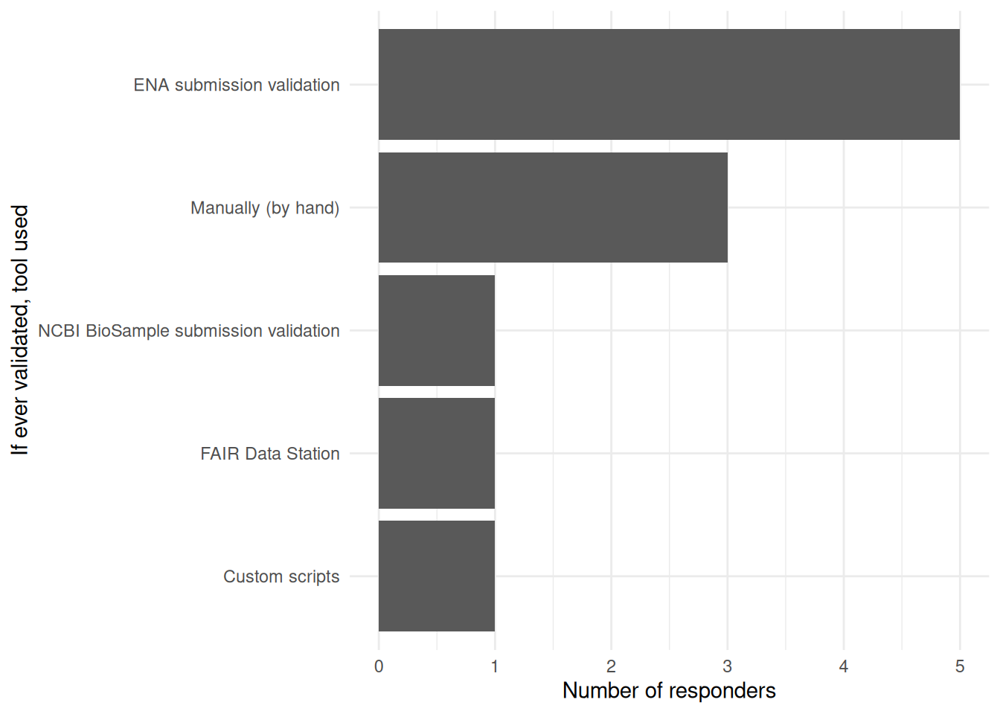
The majority of responders to this question (26) refer to either the official/central MIxS website, the MIxS GitHub, or use data repository websites to get information on the MIxS standard.
We then asked if responders were aware of the core MIxS concepts of terms, checklists, and extensions.

We see that the the concept of a MIxS checklist, is the most well known (i.e, the full collection of terms for a specific sample type), however the more granular components are less well known.
Similarly, we wanted to gauge approximately what were the more popular ‘core’ checklists and extensions, that generally represents the type of sequencing data being annotated, and the type of samples, respectively.
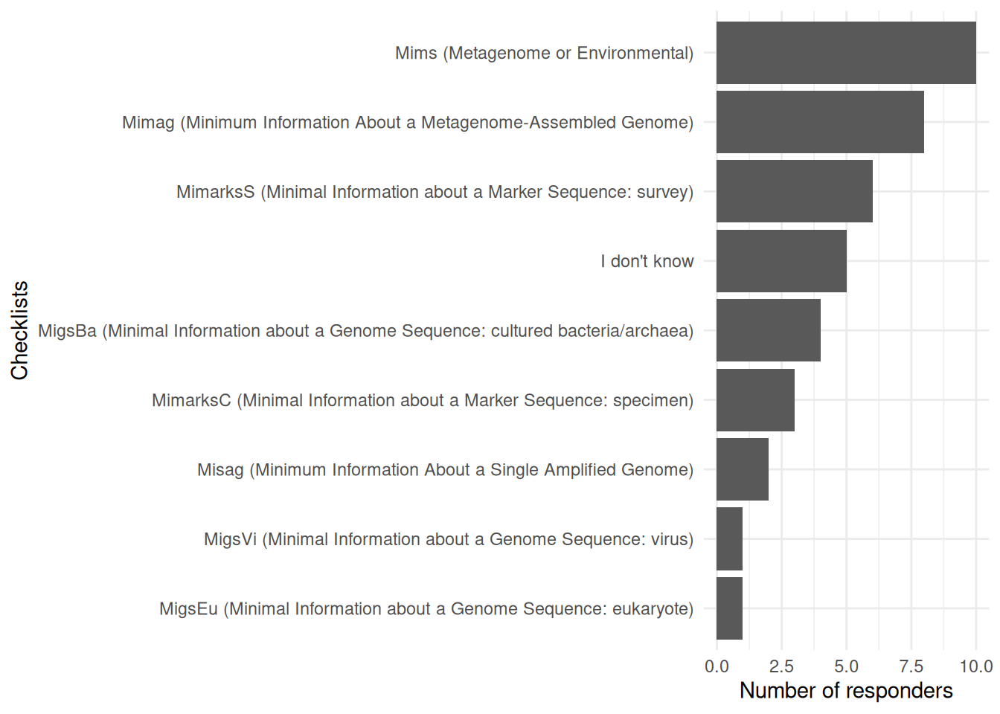
The most common checklists used were those associated with microbial ecology, partly reflecting the fields in which MIxS was generated from, as well as the networks that the author circulated the survey.
We asked the same question for that of extensions.

Most researchers responders have been working primarily on host and/or human associated data.
Contributing to MIxS
To better understand impressions and experiences about contributing with MIxS, we asked a range of questions related to how researchers and collaborate or work directly on the project.
First we wanted to know how many of the responders were considering now or in the near future contributing or updating an existing term. Additionally, we want to know whether these responders would know knew what the procedure would be for a community contribution.
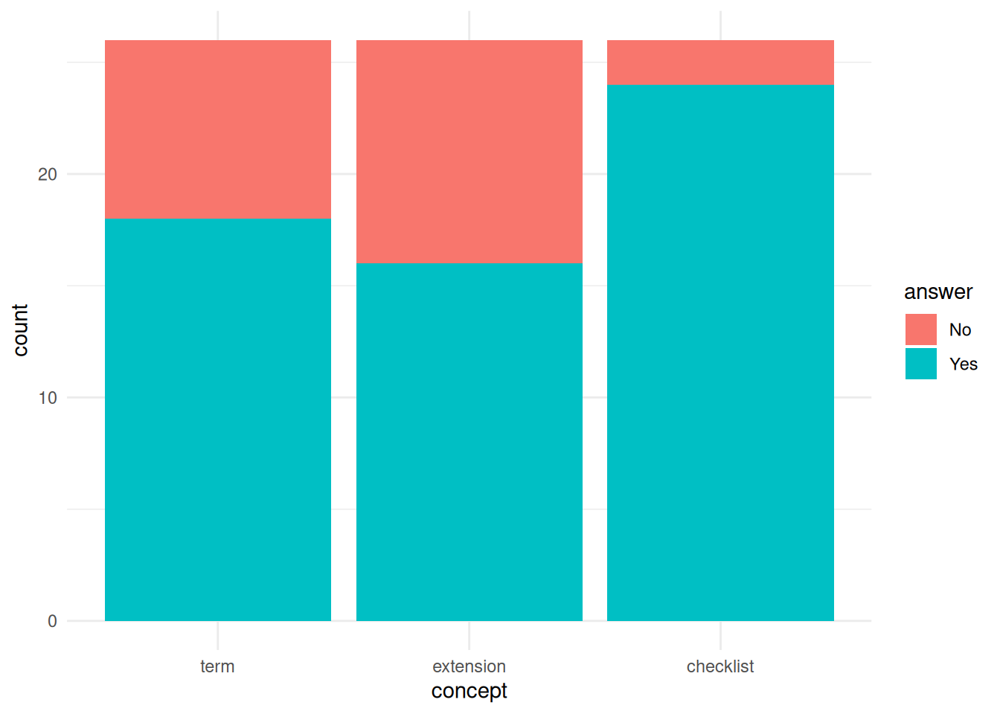
Of the responders that responded to the survey, and were familiar with MIxS, more than half said they were considering now or in the new future. Few of the responders had actually contributed or updated a MIxS term previously. Of the 14 responders who were considering contributing or updating an existing MIxS term, almost half did not know how they would do so.
We then asked the same question however about contributing a new or updating an existing extension.

The distribution of Yes/No answers for both terms and also extensions are mostly equivalent, with slightly less people planning on contributing an extension knowing how the would do so.
Of the the 2 responders who had previously contributed, they had contributed to:
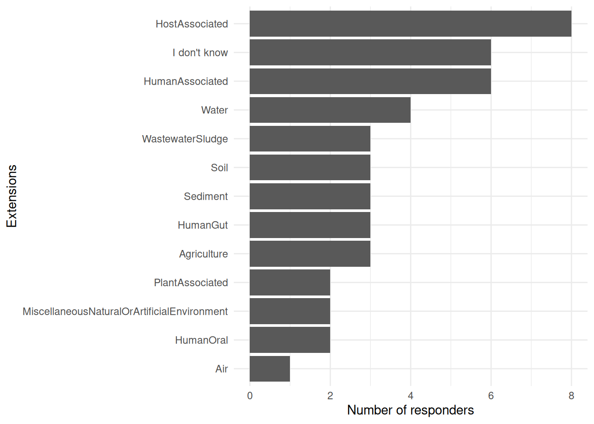
In this case one responder had contributed to all, suggesting the responder as an original architect of the MIxS standard.
We asked for those who had previously you have contributed to MIxS, what did they find was the hardest part?
As there were only two responders who had contributed previously to MIxS, the numbers were low. One user found it difficult understanding submission processes (who to contact, how to get approval, how to get feedback, and how to submit the changes), whereas the other responder did not understand the structure of the new LinkML MIxS based schema.
We also asked all responders familiar with MIxS that had considered to contribute to MIxS, but didn’t - what factors contributed to them not doing so.
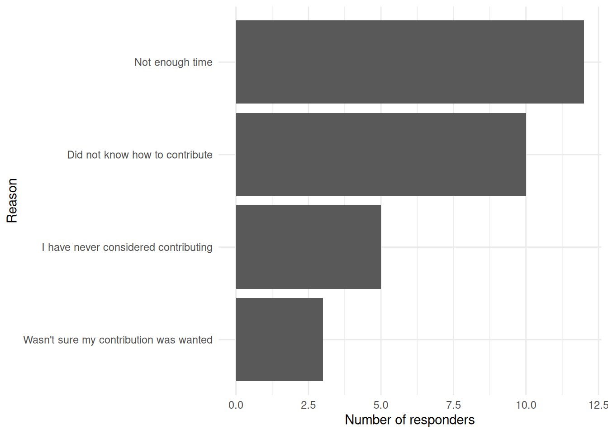
The two main reasons were time, but also similar to the feedback from the existing contributors - not knowing how to contribute remains a big issue.
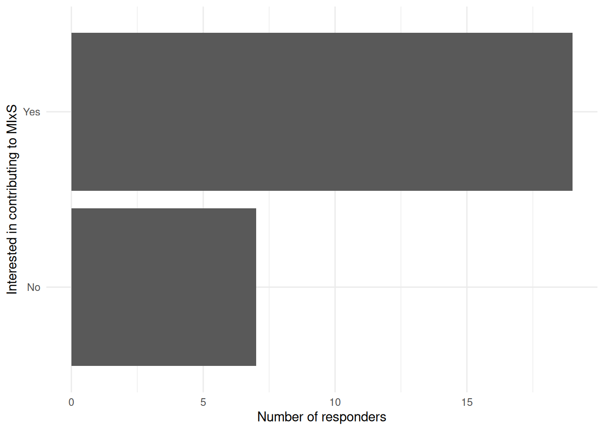
However, despite the high number of responders not previously contributing, and a mixture of confidence in knowing how to contribute, most responders familiar with MIxS are interested in getting involved in developing the standard.
Technical Questions
Due to the recent change of a custom schema system to the LinkML framework (Moxon et al. 2026), we were interested in getting a better idea of the technical knowledge of the responders.
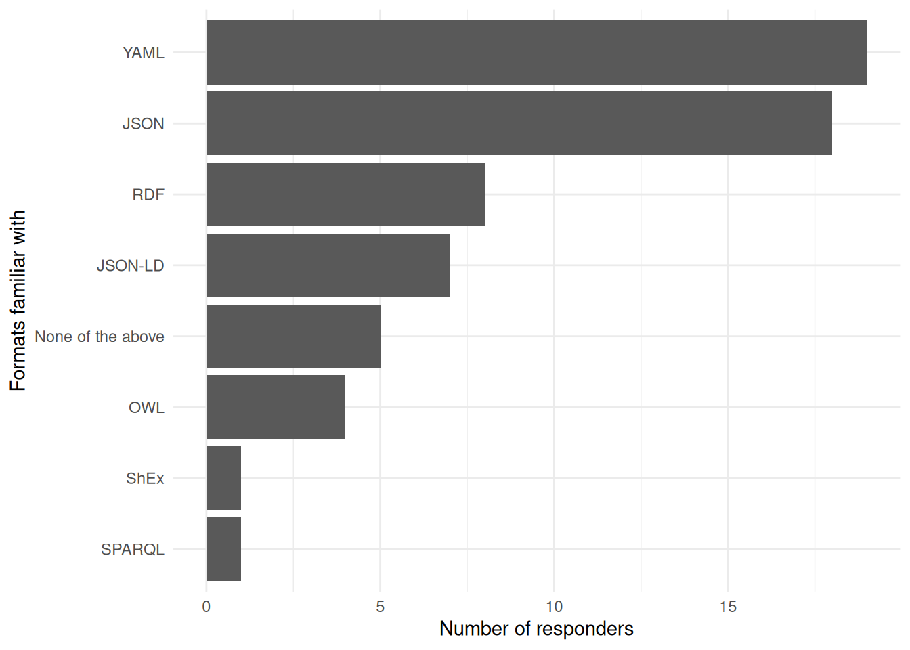
Common ‘generic’ computational formats such as YAML or JSON that are used across most software development and/or bioinformatics were most well-known, whereas dedicated linked-data or schema formats were less well known, likely as many genomics researchers handling metadata not having had training specifically in metadata management.
We also asked specifically if responders knew that MIxS was now implemented within LinkML, and thus can be converted to multiple formats, and whether they had used such functionality and if so had it helped their productivity with using MIxS
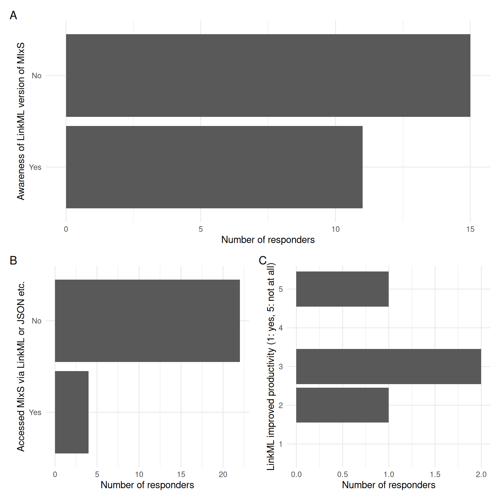
Just under half of responders knew about the LinkML version of MIxS, but very few used this new functionality currently. However it has somewhat helped the few users who had used it.
Wider context
Closing the survey, we asked if used other standards, and if so which one.
To get wider feedback on the state of genomic metadata standards, we also asked what the responders would like to see improved in other standards.
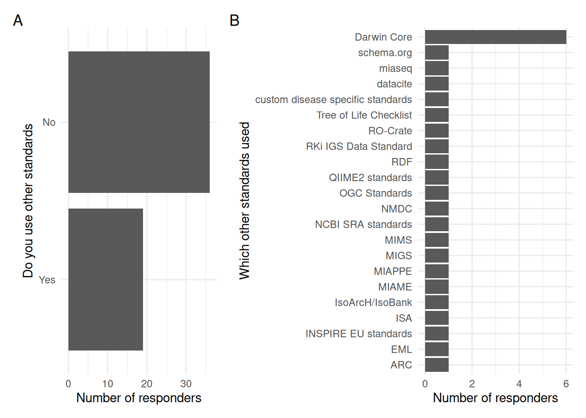
Most of the whole set of responders did not use other standards, and of those that did, there was a wide range of metadata standards used - with Darwin Core being the particular stand out.
Improvements desired in these other standards were varied, but a common request was better interlinking between different standards.
| Any further comments |
|---|
| No |
| Not now. |
| How to handle metadata following FAIR principles |
| It would be useful to link to other biomolecular data from the same samples/individuals e.g. radiocarbon, stable isotopes, palaeoproteomics etc. for easier cross-referencing. |
| We we format our metadata in accordance with public repositories (ENA, BOLD, NCBI) |
| Metadata could also be expanded to include (genome) assemblies and (genome) annotations also. |
| I just wish mixs existed sooner! |
Discussion
In total we had 56 responders, mostly from ‘High-Income economy’ countries and with a strong European focus. As expected due to the context of the standard, most responders worked within genomics, metagenomics, and/or metatranscriptomics. Interestingly, most responders are working at a Post-doctoral level (or equivalent) or higher career stage. The reason for this is unclear, but could be something that should be investigated further, could this be due to:
- A lack of training in metadata annotation?
- A generational or visibility factor (e.g. MIxS is now 20 years old)
- Experience level (e.g. many Ph.D. students may not encounter annotating their data until upload at the end of their projects)
- Expected responsibilities (e.g. if metadata annotation/data upload is left to employees with more engineering roles)
Across all responders, only 50% had heard of MIxS, and those who had had mostly had learnt about the standards through word-of-mouth through Peers or exposure from services implementing the standard. All responders who had heard of MIxS had used it - mostly in the role of a data uploader or downloader at INSDC repositories (EBI-ENA, NCBI-SRA etc.). This indicates that targeting ‘consumers’ as potential ‘starting points’ maybe an ideal starting point in prioritising which project documentation to developer, and could raise more interest in contributing to the project.
Most responders who were aware of MIxS indicated they primarily got their information about MIxS from the MIxS GitHub repository (https://github.com/GenomicsStandardsConsortium/mixs) and associated project website (https://genomicsstandardsconsortium.github.io/mixs/), or third-party implementers such as ENA or SRA, rather than the GSC website (https://www.gensc.org/) or academic publications. This therefore suggests that the most suitable place for MIxS documentation would be on the MIxS GitHub repository.
In terms of familiarity with the project, almost all responders familiar with MIxS understood what a MIxS checklist was, however the concepts of an extension or term were less well known. This suggests that information about basic MIxS concepts need to be better described or more clearly placed to ensure understanding of how the standard works at a fundamental level.
The MIMS, MIMAG, and MIMARKS checklists from human or host-associated samples were the most commonly used by responders. This likely reflects the original history and background of the project, that primarily came out of microbiology-related communities. The popularity of MIMS, MIMAG, and MIMARK checklists could be used to guide what types of examples or training material could be developed in an improved MIxS documentation framework, but also sources of potential test users of such material.
While the vast majority of responders have not previously contributed to MIxS, more than a third were interested in doing so (either via a term or extension). The main factors for not previously contributing was simply time or not knowing how to contribute (with a smaller number not knowing whether they were welcome to do so). For the small number of responders (2) who had previously contributed, their largest obstacles had been an unclear submission process and being unfamiliar with the new LinkML schema framework MIxS recently transition to. This was reflected with less than half of the responders knowing about this transition, and thus are potentially unaware of the benefits. Despite these factors, the vast majority of responders were still interested in contributing to MIxS in some form - highlighting the relevancy of the project and it’s aims to responders.
A common forward-looking feedback given by multiple responders was an interest in seeing more interoperability and alignment between different standards, with the Darwin Core metadata standard being the most popular non-MIxS standard being utilised by responders.
Acknowledgements
This report was supported by the NFDI4Microbiota Flexfund ‘MIxS-UX’, funded by the Deutsche Forschungsgemeinschaft (DFG, German Research Foundation) – 460129525.
Appendix
Notebook environment and dependencies
(Click to see dependencies used to generate notebook)
R version 4.4.1 (2024-06-14)
Platform: x86_64-pc-linux-gnu
Running under: Ubuntu 24.04.4 LTS
Matrix products: default
BLAS: /usr/lib/x86_64-linux-gnu/blas/libblas.so.3.12.0
LAPACK: /usr/lib/x86_64-linux-gnu/lapack/liblapack.so.3.12.0
locale:
[1] LC_CTYPE=en_GB.UTF-8 LC_NUMERIC=C
[3] LC_TIME=en_GB.UTF-8 LC_COLLATE=en_GB.UTF-8
[5] LC_MONETARY=en_GB.UTF-8 LC_MESSAGES=en_GB.UTF-8
[7] LC_PAPER=en_GB.UTF-8 LC_NAME=C
[9] LC_ADDRESS=C LC_TELEPHONE=C
[11] LC_MEASUREMENT=en_GB.UTF-8 LC_IDENTIFICATION=C
time zone: Europe/Berlin
tzcode source: system (glibc)
attached base packages:
[1] stats graphics grDevices utils datasets methods base
other attached packages:
[1] patchwork_1.2.0 kableExtra_1.4.0 forcats_1.0.0 tidyr_1.3.1
[5] stringr_1.5.1 janitor_2.2.1 ggplot2_3.5.1 dplyr_1.1.4
[9] readr_2.1.5
loaded via a namespace (and not attached):
[1] utf8_1.2.4 generics_0.1.3 xml2_1.3.6 stringi_1.8.3
[5] hms_1.1.3 digest_0.6.35 magrittr_2.0.3 evaluate_0.23
[9] grid_4.4.1 timechange_0.3.0 maps_3.4.3 fastmap_1.1.1
[13] jsonlite_1.8.8 purrr_1.0.2 fansi_1.0.6 viridisLite_0.4.2
[17] scales_1.3.0 cli_3.6.5 crayon_1.5.2 rlang_1.1.6
[21] bit64_4.0.5 munsell_0.5.1 withr_3.0.0 yaml_2.3.8
[25] parallel_4.4.1 tools_4.4.1 tzdb_0.4.0 colorspace_2.1-0
[29] vctrs_0.6.5 R6_2.5.1 lifecycle_1.0.4 lubridate_1.9.3
[33] snakecase_0.11.1 bit_4.0.5 htmlwidgets_1.6.4 vroom_1.6.5
[37] pkgconfig_2.0.3 pillar_1.9.0 gtable_0.3.5 glue_1.8.0
[41] systemfonts_1.2.3 xfun_0.52 tibble_3.2.1 tidyselect_1.2.1
[45] rstudioapi_0.16.0 knitr_1.50 farver_2.1.2 htmltools_0.5.8.1
[49] labeling_0.4.3 rmarkdown_2.27 svglite_2.1.3 compiler_4.4.1